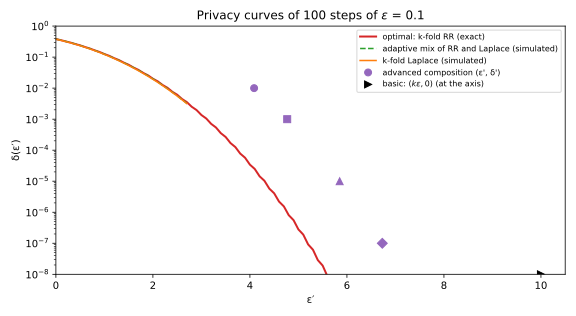

21 Advanced and optimal composition
21.1 Why this matters
A differential privacy (DP) system rarely answers one query. A dashboard refreshes a hundred counts; a training run takes thousands of noisy gradient steps. Each step is \((\varepsilon, \delta)\)-DP: for any two neighbouring datasets \(D\) and \(D'\), which differ in one person’s record, the probability of any set of outputs changes by at most a factor \(e^\varepsilon\), plus a small slack \(\delta\). You need one guarantee for the whole run, as small as the truth allows, because it sets how much noise each step can afford.
Post-processing, group privacy and composition gave the first answer, basic composition: \(k\) steps that are each \(\varepsilon\)-DP are together \(k\varepsilon\)-DP. It is correct, and for large \(k\) far too pessimistic. A hundred counts at \(\varepsilon = 0.1\) give \(k\varepsilon = 10\), which lets the outputs multiply an attacker’s odds by up to \(e^{10} \approx 22{,}000\): nothing worth stating. Yet at \(\delta = 10^{-5}\) the same hundred counts are \((4.31, 10^{-5})\)-DP, and no analysis that knows only each step’s \(\varepsilon\) can say less.
Basic composition assumes that every step produces its most revealing output at once. But the evidence a run leaks about a person is a sum of the evidence each step leaks, and a sum of many small random terms almost never reaches its maximum. Every result in this chapter charges for the tail of that sum instead of its maximum, and pays for the rare outputs beyond it with \(\delta\).
21.2 The privacy loss of a composition
Run a mechanism on \(D\) and look at its output \(y\). The log of how much more likely \(y\) was under \(D\) than under \(D'\) is the privacy loss of that output: positive when \(y\) favours \(D\), negative when it favours \(D'\), zero when it says nothing. Its distribution over random outputs is the privacy loss distribution. Pure \(\varepsilon\)-DP says that its absolute value never exceeds \(\varepsilon\).
Now run \(k\) steps. The probability of the whole output sequence is the probability of the first output, times that of the second given the first, and so on. The ratio of two such products is the product of the step-by-step ratios, and its log is a sum: the total loss is the sum of the per-step losses. This needs no independence: each term is the loss of whatever step was run after the outputs seen so far.
The total loss tells you \(\delta\). The definition lets each output be up to \(e^\varepsilon\) times likelier under \(D\) than under \(D'\), with \(\delta\) covering the excess. An output whose loss \(L\) is at most \(\varepsilon\) costs nothing. An output with a larger loss costs the part of its probability above the allowed ratio, a fraction \(1 - e^{\varepsilon - L}\) of it: almost nothing just above \(\varepsilon\), all of it when the loss is infinite. Averaging over outputs, the smallest \(\delta\) that works at a given \(\varepsilon\) is \[\delta(\varepsilon) = \mathbb E\big[(1 - e^{\varepsilon - L})_+\big] \le \Pr[L > \varepsilon], \tag{21.1}\] where \((x)_+ = \max\{x, 0\}\). So a composition theorem only needs the right tail of the total loss.
Each step’s loss can reach \(\varepsilon\), but its average is much smaller. When \(\varepsilon\) is small, an output that favours \(D\) is only slightly more likely than one that favours \(D'\), so positive and negative losses nearly cancel, and what remains is of order \(\varepsilon^2\): at most \(\varepsilon\tanh(\varepsilon/2)\), about \(\varepsilon^2/2\). It is never negative, because each step is a little more likely to point to the truth than away from it, so these averages add up to a steady drift.
Randomized response makes this concrete, and turns out to be the worst case. It reports a person’s bit truthfully with probability \(t = e^\varepsilon/(1 + e^\varepsilon)\), so each report has loss exactly \(+\varepsilon\) (truthful) or \(-\varepsilon\) (a lie). Take the dashboard’s 100 counts at \(\varepsilon = 0.1\), as randomized response: \(t = 0.5250\). The total loss has mean 0.4996 and standard deviation 0.9988. Basic composition’s \(k\varepsilon = 10\) needs all 100 reports to be truthful, which happens with probability \(t^{100} = 1.0\times10^{-28}\), 9.5 standard deviations above the mean. A sum of many small independent terms is nearly normal, and the optimal \(\varepsilon'\) at \(\delta' = 10^{-5}\), 4.31, sits 3.8 standard deviations above the mean, where only a sliver of the distribution remains (Figure 21.1).

Two consequences follow. The spread grows like \(\sqrt k\,\varepsilon\) but the drift like \(k\varepsilon^2/2\), so once \(\varepsilon\sqrt k\) is of order 1 or more the drift is comparable to the spread, and the savings over \(k\varepsilon\) shrink. And the trick needs \(\delta > 0\): with \(\delta = 0\) you must cover even the all-truthful output, which has positive probability, so you are stuck with \(k\varepsilon\).
21.3 Advanced composition
Dwork, Rothblum & Vadhan (2010) turned this picture into a theorem. Split the total loss into the drift, the sum of the per-step averages, and a fluctuation around it. The fluctuation is a sum of \(k\) terms, each confined to a range of width \(2\varepsilon\) whatever happened before, and Azuma’s inequality, a version of Hoeffding’s inequality for terms that may depend on earlier terms, says it exceeds \(\varepsilon\sqrt{2k\ln(1/\delta')}\) with probability at most \(\delta'\). Adding the drift gives the bound: \(k\) steps that are each \((\varepsilon, \delta)\)-DP, chosen adaptively, are together \((\varepsilon', k\delta + \delta')\)-DP with \[\varepsilon' = \varepsilon\sqrt{2k\ln(1/\delta')} + k\varepsilon\tanh(\varepsilon/2). \tag{21.2}\] The original theorem uses a cruder drift, \(k\varepsilon(e^\varepsilon - 1)\), about twice as large for small \(\varepsilon\); both are valid. The extra \(k\delta\) is the chance that some step uses its own slack.
The price of the \(\sqrt k\) is the factor \(\sqrt{2\ln(1/\delta')}\), which is 4.80 at \(\delta' = 10^{-5}\), the cost of cutting far into the tail. So the bound beats \(k\varepsilon\) only once \(\sqrt k\) has outgrown that factor. At \(\varepsilon = 0.1\) with the original drift, that is from \(k = 29\) on; at \(k = 10\) it gives 1.623 (1.567 with the \(\tanh\) drift), worse than basic composition’s 1, so always take the smaller of the two. Inverting the leading term gives a budget: to be \((\varepsilon_{\text{total}}, \delta')\)-DP after \(k\) steps, give each step roughly \(\varepsilon = \varepsilon_{\text{total}}/\sqrt{2k\ln(1/\delta')}\), much more than the \(\varepsilon_{\text{total}}/k\) basic composition allows.
For the 100 counts at \(\delta' = 10^{-5}\), the fluctuation term is 4.7985 and the drift \(100 \times 0.1\tanh(0.05) = 0.4996\), so \(\varepsilon' = 5.2981\); with the original drift, 5.8502. Table 21.1 and Figure 21.2 follow the bounds as \(k\) grows. At \(k = 10{,}000\), where \(\varepsilon\sqrt k = 10\), the drift has taken over: the original drift costs 105 of the 153, which is why the \(\tanh\) form is worth using.
| \(k\) | Basic \(k\varepsilon\) | Advanced, \(e^\varepsilon - 1\) drift | Advanced, Equation 21.2 | Optimal |
|---|---|---|---|---|
| 10 | 1.000 | 1.623 | 1.567 | 0.994 |
| 100 | 10.000 | 5.850 | 5.298 | 4.307 |
| 1,000 | 100.000 | 25.691 | 20.170 | 17.787 |
| 10,000 | 1,000.000 | 153.156 | 97.944 | 91.691 |

The bound is conservative in three places. Azuma’s inequality assumes each step’s loss has the largest variance its range allows. The original drift is about twice the true average loss. And the tail bound in Equation 21.1 counts every output above \(\varepsilon'\) in full, ignoring the discount for outputs just above it. So the guarantee is far stronger than it claims: at \(k = 100\) the exact \(\delta\) at the advanced \(\varepsilon' = 5.85\) is \(1.96\times10^{-9}\), not \(10^{-5}\). Use it for quick estimates, not for the number you report.
21.4 Optimal composition
The best bound comes from asking which \((\varepsilon, \delta)\)-DP mechanism is worst. Kairouz, Oh & Viswanath (2015) answered with an argument built on post-processing: further randomized steps that do not look at the data can only make the two worlds harder to tell apart, so they never increase \(\delta(\varepsilon')\). They showed that every \((\varepsilon, \delta)\)-DP mechanism can be obtained by post-processing one particular mechanism, a four-output randomized response that spends both parameters to the full: with probability \(\delta\) it announces which dataset it ran on, and otherwise it runs randomized response at level \(\varepsilon\). So any composition of \(k\) steps, even an adaptive one, is a post-processing of \(k\) copies of it, and can be no worse than those copies, whose loss you already know.
Their \(\delta\) has two parts. Either some step announces the dataset, which happens with probability \(1 - (1 - \delta)^k\), and the output is impossible under \(D'\), so it counts in full. Or none does, and the run is \(k\) rounds of randomized response: exactly \(j\) of the reports are lies with binomial probability, and the loss is then \((k - 2j)\varepsilon\). Putting that loss into Equation 21.1 gives, for every composition of \(k\) steps that are each \((\varepsilon, \delta)\)-DP, adaptive or not, \[\delta(\varepsilon') \le 1 - (1 - \delta)^k\big(1 - \delta_{\mathrm{RR}}(\varepsilon')\big), \qquad \delta_{\mathrm{RR}}(\varepsilon') = \sum_{j=0}^k\binom kj t^{k-j}(1 - t)^j\big(1 - e^{\varepsilon' - (k - 2j)\varepsilon}\big)_+, \tag{21.3}\] with \(t = e^\varepsilon/(1 + e^\varepsilon)\). The \(k\) copies are themselves a valid composition, so the bound is attained: no better one holds for the whole class. To get the total \(\varepsilon'\) for a target \(\delta\), bisect on \(\varepsilon'\) (Section 21.6).
For the 100 counts, the optimal \(\varepsilon'\) at \(\delta' = 10^{-5}\) is 4.3068: 19% below the \(\tanh\) advanced bound and 57% below basic composition. If each step also has \(\delta = 5\times10^{-8}\), the announcements use up \(5.0\times10^{-6}\) of a total \(10^{-5}\), and the optimal \(\varepsilon'\) is 4.4469. The one trap is numerical. Kairouz, Oh & Viswanath’s closed form divides numbers that overflow: at \(\varepsilon = 1\) and \(k = 1{,}000\) the denominator \((1 + e)^{1000}\) is about \(10^{570}\), beyond any double. Summed in log space nothing overflows; the snippet gives \(\delta(550) = 6.094\times10^{-4}\) there.
“Optimal” means optimal for mechanisms you know only by their \((\varepsilon, \delta)\). A real mechanism usually does better, because its loss is not always at \(\pm\varepsilon\). Laplace noise on a count sometimes lands between the two true counts, where the loss is strictly between \(-\varepsilon\) and \(\varepsilon\); those outputs carry less evidence, so its mean loss at \(\varepsilon = 1\) is 0.3679 against randomized response’s 0.4621. With different \(\varepsilon_i\) per step, computing the exact bound is #P-complete, the class of hard counting problems (Murtagh & Vadhan 2016), so use an accountant.
The bigger waste is summarizing a mechanism by one point at all. A Gaussian mechanism has a whole curve \(\delta(\varepsilon)\), and its privacy loss is itself normal, so \(k\) Gaussian steps with noise \(\sigma\) on a sensitivity-1 query compose exactly into a single Gaussian step with shift \(\sqrt k/\sigma\). With \(\sigma = 20\), 1,000 steps are exactly \((7.51, 10^{-5})\)-DP. Converting each step to its best \((\varepsilon, \delta)\) point and composing optimally gives 62.7, about 8 times worse (Figure 21.3): the point forgets how the curve continues. When you know the mechanisms, compose their curves with the accountants of Privacy accounting.

21.5 Adaptive composition
In practice the next query depends on the last answer: an analyst zooms into the largest bin of a noisy histogram, a training loop takes its next gradient at parameters set by earlier noisy gradients. This costs nothing extra, because every argument above looked at one step given the outputs so far, and once those are fixed, so is the choice of step. In the adaptive composition experiment of Dwork, Rothblum & Vadhan, an adversary picks each \((\varepsilon, \delta)\)-DP mechanism as any function of the earlier outputs, and basic, advanced and optimal composition all hold for what it sees.
An analyst who runs 100 steps at \(\varepsilon = 0.1\), choosing a Laplace query after any output that pointed to \(D\) and a randomized-response query otherwise, shows it: in 100,000 simulated runs its \(\delta\) at \(\varepsilon' = 2\) is 0.0196, below the optimal bound of 0.0201, as it must be (Figure 21.4).

The same reasoning shows where adaptivity breaks. The theorems fix \(k\), \(\varepsilon\) and \(\delta\) in advance. If each \(\varepsilon_i\) is picked after seeing earlier outputs, the width of each term’s range depends on the history, and Azuma’s inequality, which needs those widths fixed, no longer applies. A rule such as “keep querying until the budget is spent” therefore needs its own theorem, a privacy filter, and reporting the spend so far at every moment needs a privacy odometer, which costs more (Adaptive composition). Pure DP under basic composition is the exception: each loss is bounded by its \(\varepsilon_i\) on every output, so \(\sum_i\varepsilon_i\) bounds the total whatever order the budgets came in.
Choices must also be made from the outputs, never from the raw data. A stopping rule that looks at the noisy answers is post-processing and free; one that looks at the raw data leaks: a system that answers private counts until the true count of some group crosses a threshold reveals that count through the number of answers it gives, and the run is not DP for any finite \(\varepsilon\), even though every answer is.
21.6 Code
The optimal bound needs only a binomial sum, evaluated in log space so that nothing overflows, and a bisection. This is the whole of it, with advanced composition alongside:
from math import exp, expm1, lgamma, log, log1p, sqrt, tanh
def advanced_epsilon(eps: float, k: int, delta_prime: float) -> float:
"""Advanced composition with the sharp drift term k * eps * tanh(eps / 2)."""
return eps * sqrt(2 * k * log(1 / delta_prime)) + k * eps * tanh(eps / 2)
def optimal_delta(eps_total: float, eps: float, k: int, delta: float = 0.0) -> float:
"""Kairouz-Oh-Viswanath: the exact delta(eps_total) of k (eps, delta)-DP steps, in log space."""
log_t, log_1mt = -log1p(exp(-eps)), -log1p(exp(eps)) # log of truthful / lying probability
logs: list[float] = []
for j in range(k + 1): # j of the k reports lie
loss = (k - 2 * j) * eps
if loss <= eps_total:
break
log_binom = lgamma(k + 1) - lgamma(j + 1) - lgamma(k - j + 1)
logs.append(log_binom + (k - j) * log_t + j * log_1mt + log(-expm1(eps_total - loss)))
top = max(logs, default=0.0)
delta_rr = exp(top) * sum(exp(x - top) for x in logs) if logs else 0.0
return 1 - (1 - delta) ** k * (1 - delta_rr)
def optimal_epsilon(eps: float, k: int, target_delta: float, delta: float = 0.0) -> float:
"""The smallest total epsilon whose optimal delta is at most target_delta, by bisection."""
lo, hi = 0.0, k * eps
for _ in range(100):
mid = (lo + hi) / 2
lo, hi = (mid, hi) if optimal_delta(mid, eps, k, delta) > target_delta else (lo, mid)
return hi
print(f"{advanced_epsilon(0.1, 100, 1e-5):.4f}") # 5.2981
print(f"{optimal_epsilon(0.1, 100, 1e-5):.4f}") # 4.3068
print(f"{optimal_epsilon(0.1, 100, 1e-5, delta=5e-8):.4f}") # 4.4469
print(f"{optimal_epsilon(0.1, 1000, 1e-5):.3f}") # 17.787
print(f"{optimal_delta(550, 1.0, 1000):.3e}") # 6.094e-04It reproduces the numbers of Section 21.3 and Section 21.4, including the case where the closed form overflows. The full edition’s script, composition.py, checks the bound against brute-force enumeration and simulates the Laplace and adaptive compositions:
uv run python code/part03-dp-foundations/composition.py21.7 Cheat sheet
| Result | Formula | Notes |
|---|---|---|
| Privacy loss of a composition | \(L = L_1 + \dots + L_k\) | Adaptive or not |
| \(\delta\) from the loss | \(\delta(\varepsilon) = \mathbb E[(1 - e^{\varepsilon - L})_+] \le \Pr[L > \varepsilon]\) | Only the tail of \(L\) matters |
| Mean loss of an \(\varepsilon\)-DP step | \(\le \varepsilon\tanh(\varepsilon/2) \approx \varepsilon^2/2\) | Equality for randomized response |
| Basic composition | \((k\varepsilon, k\delta)\) | Adaptive; parameters may adapt for pure DP |
| Advanced composition | \(\big(\varepsilon\sqrt{2k\ln(1/\delta')} + k\varepsilon\tanh(\varepsilon/2),\ k\delta + \delta'\big)\) | Quick budget: \(\varepsilon \approx \varepsilon_{\text{total}}/\sqrt{2k\ln(1/\delta')}\) per step; take the smaller of this and basic |
| Optimal composition | \(1 - (1 - \delta)^k(1 - \delta_{\mathrm{RR}}(\varepsilon'))\), Equation 21.3 | Tight for mechanisms known only by \((\varepsilon, \delta)\); compute in log space |
| Known mechanism, such as Gaussian | Compose the whole curve | Point summaries can be off by a factor of 8 |
| Adaptivity | Queries may adapt to outputs | Privacy parameters and data-dependent stopping may not |
21.8 Further reading
- Dwork & Roth, The Algorithmic Foundations of Differential Privacy (2014), §3.5: basic and advanced composition, the version most libraries cite.
- Kairouz, Oh & Viswanath, “The Composition Theorem for Differential Privacy” (ICML 2015): the hypothesis-testing view, the worst-case mechanism and the optimal bound.
- Rogers, Roth, Ullman & Vadhan, “Privacy Odometers and Filters: Pay-as-you-Go Composition” (NeurIPS 2016): why adaptively chosen privacy parameters need new theorems.
- Dong, Roth & Su, “Gaussian Differential Privacy” (JRSS Series B, 2022): composing whole privacy curves, and why the total loss looks normal.
Derivations. Every result in this chapter is derived step by step in the full edition’s chapter.